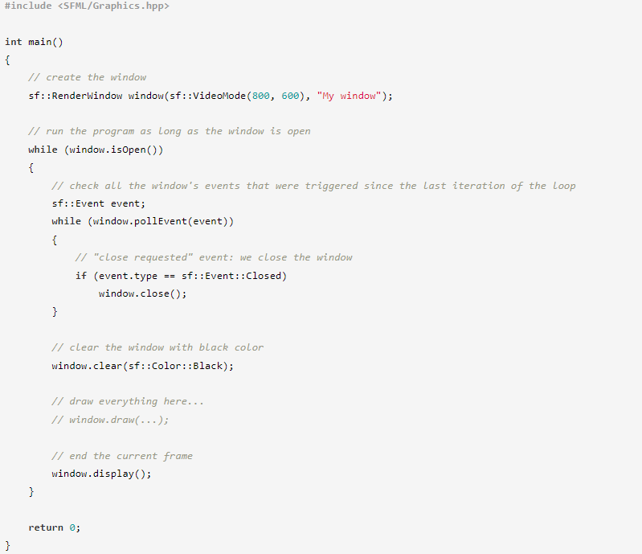
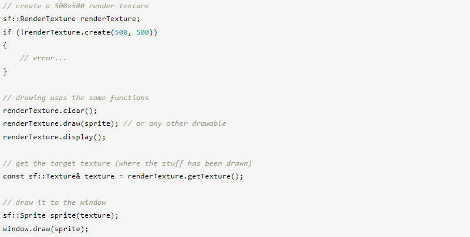
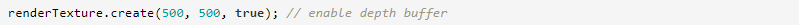
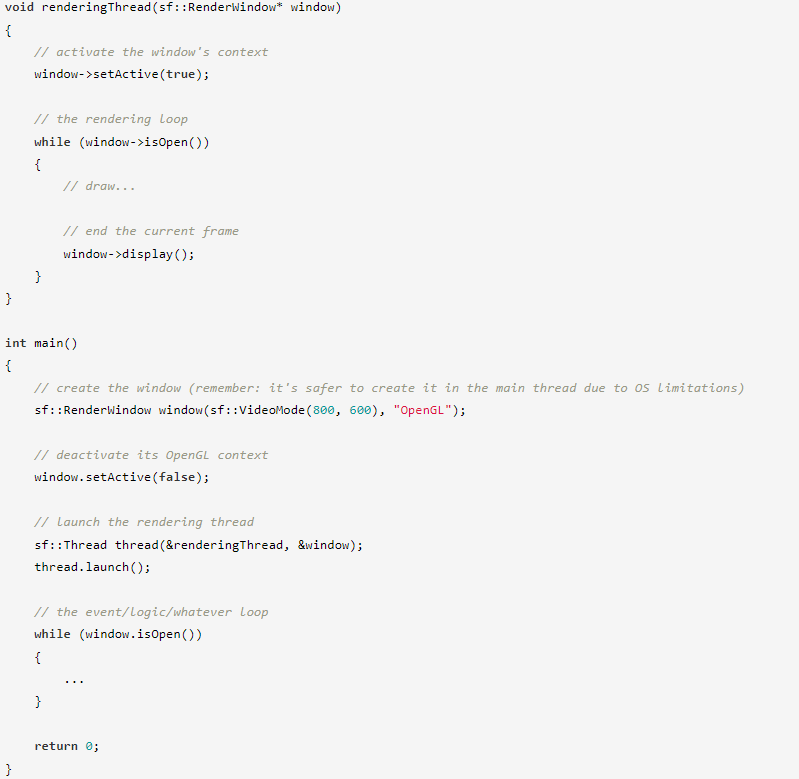

⇐Использование OpenGL в окне SFML
Как вы узнали из предыдущих руководств, оконный модуль SFML предоставляет простой способ открыть окно OpenGL и обрабатывать его события, но он не помогает, когда дело доходит до рисования чего-либо. Единственный вариант, который вам остается, — это использовать мощный, но сложный и низкоуровневый API OpenGL.
К счастью, SFML предоставляет графический модуль, который поможет вам рисовать 2D-объекты гораздо проще, чем в OpenGL.
Для рисования объектов, предоставляемых графическим модулем, необходимо использовать специализированный класс окна: sf::RenderWindow. Этот класс является производным от sf::Window и наследует все его функции. Все, что вы узнали о sf::Window (создание, обработка событий, управление частотой кадров, микширование с OpenGL и т. д.), применимо и к sf::RenderWindow.
Кроме того, sf::RenderWindow добавляет высокоуровневые функции, которые помогут вам легко рисовать. В этом уроке мы сосредоточимся на двух из этих функций: очистке и рисовании. Они настолько просты, как следует из их названия: clear очищает все окно выбранным цветом, а draw рисует любой объект, который вы ему передаете.
Вот как выглядит типичный основной цикл с окном рендеринга:
Вызов очистки перед рисованием является обязательным, иначе содержимое предыдущих кадров будет присутствовать за всем, что вы рисуете. Единственное исключение — это когда вы закрываете все окно тем, что рисуете, так что ни один пиксель не рисуется. В этом случае можно не вызывать очистку (хотя это не окажет заметного влияния на производительность).
Вызов display также обязателен, он берет то, что было нарисовано с момента последнего вызова display, и отображает это в окне. Действительно, вещи отрисовываются не прямо в окно, а в скрытый буфер. Затем этот буфер копируется в окно, когда вы вызываете display — это называется двойной буферизацией.
Этот цикл очистки/рисования/отображения — единственный хороший способ рисовать. Не пробуйте другие стратегии, такие как сохранение пикселей из предыдущего кадра, «стирание» пикселей или рисование один раз и вызов отображения несколько раз. Вы получите странные результаты из-за двойной буферизации.
Современное графическое оборудование и API действительно созданы для повторяющихся циклов очистки/отрисовки/отображения, когда все полностью обновляется на каждой итерации основного цикла. Не бойтесь рисовать 1000 спрайтов 60 раз в секунду, это намного меньше миллионов треугольников, которые может обработать ваш компьютер.
Теперь, когда у вас есть основной цикл, готовый к рисованию, давайте посмотрим, что и как вы можете там нарисовать.
SFML предоставляет четыре типа рисуемых объектов: три из них готовы к использованию (спрайты, текст и фигуры), последний — это строительный блок, который поможет вам создавать собственные рисуемые объекты (массивы вершин).
Хотя у них есть некоторые общие свойства, у каждой из этих сущностей есть свои нюансы, поэтому они объясняются в специальных руководствах:
SFML также позволяет рисовать текстуру, а не прямо окно. Для этого используйте sf::RenderTexture вместо sf::RenderWindow. Он имеет те же функции для рисования, унаследованные от их общей базы: sf::RenderTarget.
Функция getTexture возвращает текстуру, доступную только для чтения, что означает, что вы можете только использовать ее, но не изменять. Если вам нужно изменить его перед использованием, вы можете скопировать его в свой собственный экземпляр sf::Texture и изменить его вместо этого.
sf::RenderTexture также имеет те же функции, что и sf::RenderWindow, для обработки представлений и OpenGL (дополнительные сведения см. в соответствующих руководствах). Если вы используете OpenGL для отрисовки текстуры рендеринга, вы можете запросить создание буфера глубины, используя третий необязательный аргумент функции создания.
SFML поддерживает многопоточное рисование, и вам даже не нужно ничего делать, чтобы заставить его работать. Единственное, что нужно помнить, это деактивировать окно, прежде чем использовать его в другом потоке. Это связано с тем, что окно (точнее, его контекст OpenGL) не может быть активным более чем в одном потоке одновременно.
Как видите, вам даже не нужно возиться с активацией окна в потоке рендеринга, SFML сделает это автоматически за вас всякий раз, когда это необходимо.
Не забывайте всегда создавать окно и обрабатывать его события в основном потоке для максимальной переносимости. Это объясняется в учебнике по окнам.